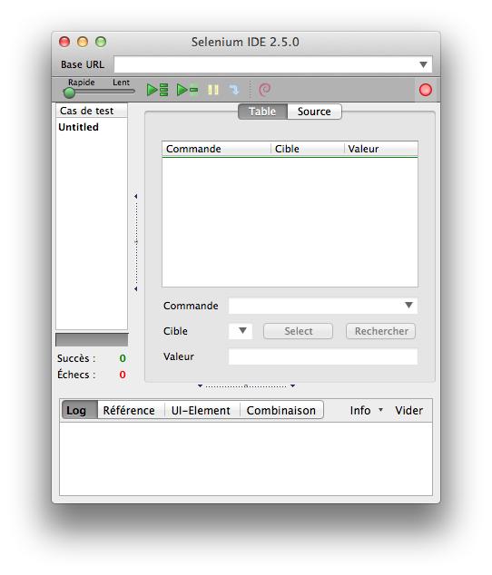

TP cycle de vie des applications
S. Salva
1. Objectifs
Effectuer des tests d'intégration d'applications Web
Savoir utiliser Selenium IDE, enregistrer des tests, compléter des
tests, etc.
2. Installation et premier test
Selenium est une suite
logicielle permet d'effectuer des tests d'intégration d'applications
Web. Selenium est basé sur Javascript et permet de manipuler le contenu
d'une page (complétion des champs, click sur bouttons, etc.),
d'effectuer des assertions sur des pages Web. Selenium est donc capable
de manipuler la structure DOM (vous connaissez oui non ? si non,
demandez !!), qu'elle soit connue (utilisation d'identifieurs
statiques) ou non. 2 frameworks sont possibles:
- Selenium IDE qui est un plugin Firefox qui permet de faire du
record and replay et de compléter avec des assertions les cas de tests
enregistrés. Il est également possible de rentrer des cas de test
complets à la main.
- Selenium Webdriver qui permet de construire des cas de test uniquement
via du code, code qui peut être écrit en Java, en PHP, etc.
Le fonctionnement de Selenium a été repris par d'autres outils,
comme par exemple Robotium
pour tester des applications Web (c'est exactement le même
concept).
Dans ce TP, on va s'intéresser à Selenium IDE.
A
Pour installer Selenium IDE, lancez Firefox, allez sur ce lien http://docs.seleniumhq.org/download/
et téléchargez Selenium IDE. Après un redemarrage, vous
aurez un nouveau boutton et un nouveau lien dans le
menu Outils. Lancez
Selenium, vous obtenez cette fenêtre :

L'interface n'est pas très complexe. Si toutefois vous avez un doute
sur un onglet ou boutton, regardez
la doc !!!!
B
Nous allons créer un premier cas de test. Faites: click droit nouveau test . Lancez l'enregistrement en cliquant sur le boutton rouge.
Puis sur firefox, entrez www.google.fr et dans le texte "votre nom prénom". Revenez sur Selenium IDE et arretez l'enregistrement (click boutton rouge).
Vous pouvez ensuite rejouer le test, à différentes vitesses.
Le cas de test est donné sous forme de tableau et son source est donné dans l'onglet Source:
On a ici quelques commandes:
- open permet d'ouvrir un document donné en argument
- type indique que l'on ajoute du texte dans un élément HTML
- click correspond à l'action click sur un élément
La liste des commandes "classiques" est donnée là.
Les commandes sont de type:
- actions: telles que click, select. Ces actions ont souvent un suffixe "AndWait" pour ajouter une attente sur l'action (ex: attendre qu'une page se charge ),
- accesseurs: actions sur l'état de l'application et sur des variables (stockage),
- assertion (et vérifications)
Les éléments sont identifiés via des Locators (DOM, Xpath, CSS, etc.) : voir ici
C
Le test précédent n'est pas réellement un test. Il manque les assertions !!
Il est possible de les ajouter à la main, MAIS il est également
possible, pendant l'enregistrement, de faire un click droit et
d'utiliser les commandes offertes.
Refaites un cas de test, sur le site local SDTA.
Sur chaque page, vous pouvez faire un click droit, pour avoir une liste de commandes disponibles
Vous pouvez également surligner un élément précis d'une page et faire click droit pour avoir des commandes liées à cet élément.
Ici, je vous demande de créer un cas de test pour:
- ouvrir le site,
- vérifier que le titre est bien '1st Symposium on Digital Trust in Auvergne",
- vérifiez que l'image du limos est présente (assertion assertElementPresent)
- aller sur l'onglet call for paper
- vérifier que le contenu de la page contient la phrase "Security Policies".
2. Faire des cas de test plus complexes
A
Complétez le cas de test précédent pour vérifier si la première page contient "security pour les nuls" et si la deuxième page
contient le mot "exposed" . Vous pouvez
utiliser la commande assertText. Il faut également utiliser des expressions régulières.
B
Votre cas de test précédent doit retourner FAIL ("security pour les
nuls" n'est pas dans la première page). A ce stade, le cas de test
stoppe son exécution sans aller sur la deuxième page "Call for Paper".
On peut toutefois utiliser d'autres commandes, à la place des assert,
pour vérifier des propriétés et continuer le test, en utilisant les
commandes de la famille verify.
Modifiez votre cas de test précédent en utilisant verifyText à la place
de assertText. En relançant votre test, vous observerez qu'il
s'exécutera jusqu'au bout.
C
Implantez un nouveau cas de test permettant d'ouvrir l'onglet
"Registration" (toujours sur le site local SDTA). Dans cette page, complétez le formulaire, cliquez sur
register et vérifiez que la page suivante contient "registration
complete".
Observez le source du cas de test: chaque élément du formulaire est
identifié par son nom ou son identifiant. (name=*** ou id=***).
Il est possible aussi d'employer DOM pour faire référence à des éléments
de page. C'est dynamique (auparavant statique) et permet plus de
flexibilité.
Par exemple, dans le formulaire précédent, au lieu d'utiliser name=nom, on peut utiliser document.forms[0].elements[1].
Utilisez DOM sur tout le cas de test
D
On veut maintenant vérifier que si l'on effectue une registration
(comme précédent) puis click sur le lien "administration"
(login:licence, pass:licence), la page affichée contient bien la
personne enregistrée (test sur son nom)
Faites le cas de test.
Le problème est que ce cas de test est statique, il faut en créer un
pour chaque enregistrement entrer le nom et vérifier que le nom entré
est dans le deuxième page (bof bof). Utilisons des variables pour
alléger le code et génériser.
Une variable se définit comme suit:
<tr>
<td>store</td>
<td>contenu variable</td>
<td>test</td>
</tr>
et s'utilise ensuite comme cela ${test}, par exemple
<tr>
<td>verifyText</td>
<td>name=nom</td>
<td>${test}</td>
</tr>
Modifiez votre cas de test précédent pour stocker dans une variable le nom entré dans la page registration et vérifier que ce nom est présent dans la page administration.
3. Suites de test
Si ce n'est pas encore fait, enregistrez vos cas de test. (click droit propriété, donnez l'extension html).
Par défaut, l'ensemble des cas de test chargés sont dans l'onglet
gauche, vous pouvez lancez un cas de test ou bien tous les cas de test.
Mais vous pouvez aussi construire une suite de test, comme dans l'exemple donné ici:
<html>
<head>
<title>Test Suite Function Tests - Priority 1</title>
</head>
<body>
<table>
<tr><td><b>Suite Of Tests</b></td></tr>
<tr><td><a href="./cas1.html">Login</a></td></tr>
<tr><td><a href="./cas2.html">Test Searching for Values</a></td></tr>
<tr><td><a href="./cas3.html">Test Save</a></td></tr>
</table>
</body>
</html>
A
Créez une suite de test pour vos cas de test précédents.
4. Test des attributs des éléments de page
Selenium offre la possiblité de tester l'état de propriétés d'éléments
de pages (le style, le href, le title, etc.) AssertAttribute (ou
VerifyAttribute) permet de construire les assertions.
A
Créez un cas de test permettant de vérifier que le lien en bas de page pointe vers index.php?page=admin (voir doc!)
5. extensions
Selenium accepte des extensions qui offrent de nouveaux mots clés pour per exemple faire des boucles de test.
Par exemple vous avez l'extension sideflow qui permet seulement de d'implémenter des boucles, ou Selblocks qui est plus riche car elle permet de faire des conditions, de manipuler de l'XML etc.
Téléchargez l'une des extensions puis faites un cas de test pour
cliquer sur les 6 liens et vérifier que le titre de la page obtenu est
bien "1st Symposium on Digital Trust in Auvergne".
Toujours sur le site SDTA, on veut tester que le click de tous
les onglets amène à une page de SDTA. Au lieu de tester onglet par
onglet, il vous ai bien sûr demandé d'utiliser une boucle.